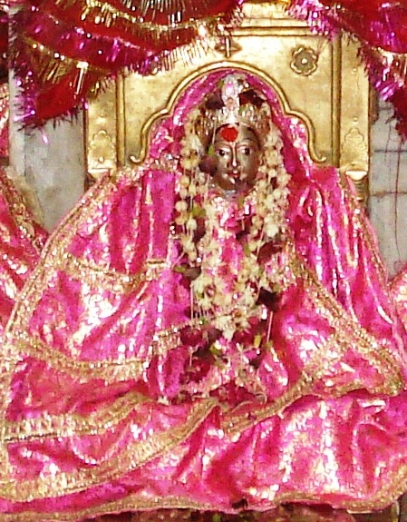

<?xml version="1.0" encoding="UTF-8"?><rss version="2.0"
	xmlns:content="http://purl.org/rss/1.0/modules/content/"
	xmlns:wfw="http://wellformedweb.org/CommentAPI/"
	xmlns:dc="http://purl.org/dc/elements/1.1/"
	xmlns:atom="http://www.w3.org/2005/Atom"
	xmlns:sy="http://purl.org/rss/1.0/modules/syndication/"
	xmlns:slash="http://purl.org/rss/1.0/modules/slash/"
	>

<channel>
	<title>Chitra Ghanta Devi &#8211; Varanasi Temples</title>
	<atom:link href="index.html" rel="self" type="application/rss+xml" />
	<link>../../../../index.html</link>
	<description>Temples of Varanasi as referred to in Kashi Khand</description>
	<lastBuildDate>Thu, 19 Jun 2025 05:16:46 +0000</lastBuildDate>
	<language>en-US</language>
	<sy:updatePeriod>hourly</sy:updatePeriod>
	<sy:updateFrequency>1</sy:updateFrequency>
	<generator>https://wordpress.org/?v=4.6.29</generator>
	<item>
		<title>CHITRA GHANTA DEVI</title>
		<link>../../../../devi-temples/chitra-ghanta-devi/index.html</link>
		<pubDate>Tue, 11 May 2010 09:59:17 +0000</pubDate>
		<dc:creator><![CDATA[admin]]></dc:creator>
				<category><![CDATA[Chitra Ghanta Devi]]></category>
		<category><![CDATA[Devi Temples]]></category>
		<category><![CDATA[chandra gup]]></category>
		<category><![CDATA[chandragu]]></category>
		<category><![CDATA[devi books]]></category>
		<category><![CDATA[ghanta]]></category>
		<category><![CDATA[http://varanasi-temples.com/devi-temples/chitra-ghanta-devi/]]></category>
		<category><![CDATA[mukt hast chitra]]></category>

		<guid isPermaLink="false">../../../../p=584.html</guid>
		<description><![CDATA[Kashi Khand advises devotees to take bath in Chitra Koop, worship Chitra Gupteshwar and perform pooja of Chitra Ghanta Devi. By performing poojas with all divinity, the devotee’s name will not figure in the books of  Chitra Gupta.  It is noteworthy to mention here that Chitra Gupta records the sins committed by various devotees, who [&#8230;]]]></description>
				<content:encoded><![CDATA[<p>Kashi Khand advises devotees to take bath in Chitra Koop, worship Chitra Gupteshwar and perform pooja of Chitra Ghanta Devi.</p>
<p>By performing poojas with all divinity, the devotee’s name will not figure in the books of  Chitra Gupta.  It is noteworthy to mention here that Chitra Gupta records the sins committed by various devotees, who ultimately find their way to Hell.  Kashi Khand is very succinct in its narration.</p>
<p>By saying that the devotee’s name will not figure in the books of  Chitra Gupta, it means that all the sins of the devotee, committed knowingly or unknowingly will be cleansed away.</p>
<p></p>
<p style="text-align: center;"><strong>(CHITRA GHANTA DEVI)</strong></p>
<p>As per Puranic belief, the third power of Maa Durga is Chitra Ghanta  who is worshipped on the third day of Navratri.  She has a crescent shaped bell on her forehead and so she is called Chandra Ghanta. Her body has a golden glow.  She has ten hands which have different weapons. Her vehicle is lion and her posture signifies readiness for battle.</p>
<p>In spite of her warrior attitude, she presents a mild, prosperous and peaceful form to her devotees. Since she is always ready for battle, she gives blessings to her devotees very fast. Her devotees are as mighty and brave as a lion and at the same time they exude a peaceful and happy radiance wherever they go.</p>
<p>Maa Chitra Ghanta relieves her devotees of all difficulties and they get success very easily.</p>
<p>&nbsp;</p>
<p><strong>Please watch our YouTube Video about Chitra Ghanta Devi at following Link</strong></p>
<p>&nbsp;</p>
<p><a href="https://www.youtube.com/watch?v=4J2GrPNCmlc&amp;t=32s">https://www.youtube.com/watch?v=4J2GrPNCmlc&amp;t=32s</a></p>
<p>&nbsp;</p>
<p><strong><span style="text-decoration: underline;">LOCATION OF CHITRA GHANTA DEVI</span></strong></p>
<p>Chitra Ghanta Devi is located at Ck. 23/34, Chitra Ghanta Gulli. Devotees can travel upto Chowk by rickshaw and walk on foot to this place. The temple is situated in a narrow gully somewhat opposite UCO Bank in Chowk.   Devotees specially worship this Devi on the Navaratri falling in September/October.</p>
<h3></h3>
<h3>TYPES OF POOJA</h3>
<p>The temple remains open in the morning from 06.00 a.m. to 10.00 a.m. and from 6.00 p.m.  to 08.00 p.m.  However, devotees can have darshan practically the whole day, through the grill gate.  According to locals, the timings are flexible.</p>
]]></content:encoded>
			</item>
	</channel>
</rss>
